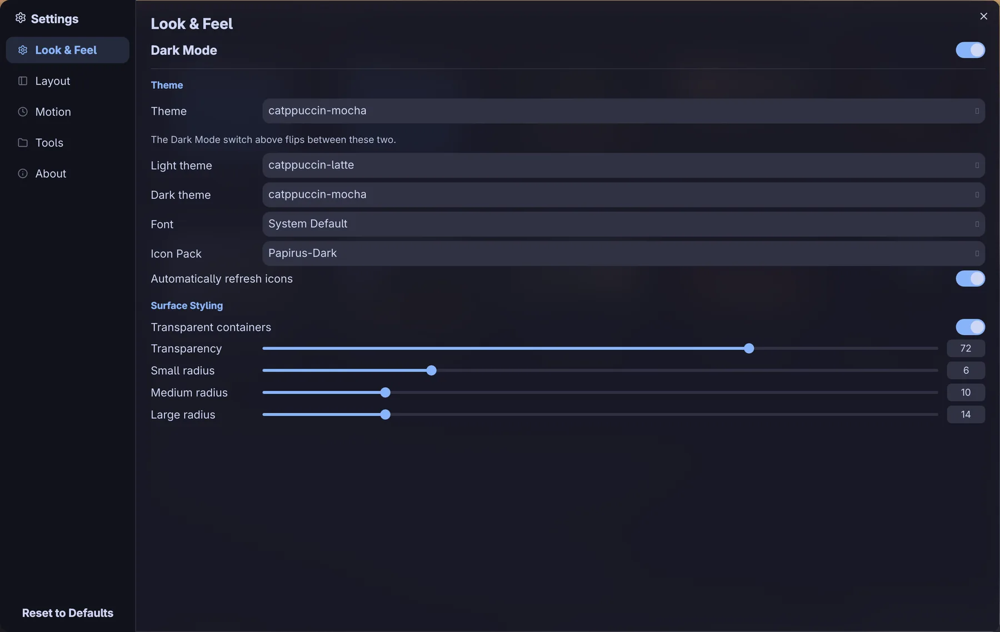

A file manager
made for Hyprland
Miller columns, quick preview and a real shell, all from the keyboard.
Every frame is the real window in a nested Hyprland, with Hyprland’s own blur. Nothing is mocked up.
One key, one pane
Each clip is the real window, recorded at the keypress named beside it.
Miller columns Ctrl2
Parent, folder and a live preview, side by side.
Quick preview Space
Photos, video posters and PDFs, full size, with their metadata.
Built-in terminal F4
A shell under the folder you are in, on Ghostty’s terminal core.
Bulk rename F2
Find and replace, regex, prefixes and sequences, previewed first.
Readable previews
PDF pages, rendered Markdown and highlighted code in the side pane.
Split pane F3
Two folders at once. Drag between them, or to any Wayland app.
Every action has a key
Hold Ctrl, Shift or Alt to see each layer light up. Remap any of them under [shortcuts] in config.toml.
Point at a lit key, or press it.
- Move around
- Files
- Tabs and panes
- View
All 49 as a list
Move around
- Enter
- Open
- Alt←
- Back
- Alt→
- Forward
- Alt↑
- Parent folder
- AltHome
- Home folder
- F5
- Refresh
- CtrlL
- Type a path
- CtrlF
- Search
- Space
- Quick preview
Files
- CtrlC
- Copy
- CtrlX
- Cut
- CtrlV
- Paste
- F2
- Rename
- CtrlShiftN
- New folder
- CtrlN
- New file
- Delete
- Trash
- ShiftDelete
- Delete for good
- CtrlA
- Select all
- CtrlZ
- Undo
- CtrlShiftZ
- Redo
- AltEnter
- Properties
- ShiftF10
- Menu
Tabs and panes
- CtrlT
- New tab
- CtrlAltN
- New window
- CtrlW
- Close tab
- CtrlTab
- Next tab
- CtrlShiftTab
- Previous tab
- CtrlShiftT
- Reopen tab
- CtrlEnter
- Open in a tab
- CtrlShiftEnter
- Open in split
- F3
- Split view
- F6
- Next pane
- ShiftF6
- Previous pane
- CtrlAlt←
- Pane left
- CtrlAlt→
- Pane right
- CtrlAlt↑
- Pane up
- CtrlAlt↓
- Pane down
- CtrlShiftO
- Flip split
View
- CtrlH
- Hidden files
- CtrlShiftB
- Transparency
- F9
- Sidebar
- F4
- Terminal
- CtrlAltT
- Terminal app
- Ctrl1
- Grid
- Ctrl2
- Columns
- Ctrl3
- Details
- Ctrl,
- Settings
- CtrlShift,
- Edit config
- Ctrl?
- All shortcuts
Ten themes, or your wallpaper’s
Every colour eases across in 350 ms, the same curve the app uses. Set the theme to pywal and it follows your wallpaper.
- Home
- Recents
- Trash
- Network
- Pictures
- Downloads
- Documents
- Downloads
- Pictures
- Projects
- Videos
- Desktop
- Documents
- Downloads
- Music
- Pictures
- Projects
- Videos
- Trips
- Wallpapers
- beskydy-october.jpg
- conwy-estuary-dusk.jpg
- esztergom-blue-hour.jpg
- herbert-lake-mist.jpg
- howth-head-gorse.jpg
- mylgval-cirque.jpg
- namib-dunes.jpg
- oeschinensee-perseids.jpg
herbert-lake-mist.jpg
JPEG image, 518.7 KB
Dimensions: 1920 x 1280
Location: /home/you/Pictures
Fast, with receipts
Measured on 20 September 2026 on a Ryzen 5 5600H laptop. Read the method
- 163msLaunch to first frame Opening your home folder.
- 40msInto a folder of 10,000 files Listed, sorted and drawn.
- 114MBMemory with the window up Proportional set size, GPU driver included.
Install it tonight
Qt 6 on Wayland. Pick the package your system already trusts.
yay -S hyprfm-gitflatpak remote-add --user --if-not-exists \
flathub https://dl.flathub.org/repo/flathub.flatpakrepo
flatpak remote-add --user --if-not-exists \
hyprfm https://flatpak.hyprfm.soyebjim.me/hyprfm.flatpakrepo
flatpak install --user hyprfm io.github.soyeb_jim285.HyprFMchmod +x HyprFM-*-x86_64.AppImage
./HyprFM-*-x86_64.AppImageDownload the AppImage from the latest release. It bundles Qt.
nix run github:soyeb-jim285/hyprfmgit clone --recursive https://github.com/soyeb-jim285/hyprfm.git
cd hyprfm
cmake -B build -G Ninja -DCMAKE_BUILD_TYPE=Release
cmake --build build --parallel
config.toml.